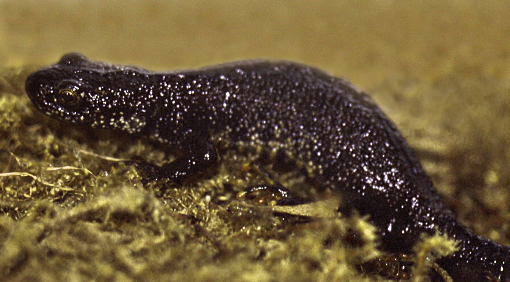

(Lissotriton vulgaris)
Traszka Zwyczajna to mały płaz o wydłużonym, smukłym ciele. Jej skóra może mieć odcienie brązu, zielonego i żółtego z ciemnymi plamami. Samce w okresie godowym wykształcają wydłużony ogon, brodawki na palcach oraz niebieskie pasy na ogonie i grzbiecie. Oczy są małe z okrągłymi źrenicami, a w okresie godowym samce przybierają jaskrawe kolory. Jej ubarwienie jest jaśniejsze niż u innych gatunków traszek.
Traszka Zwyczajna to gatunek wodny, który żyje w małych zbiornikach wodnych, jak stawy, kałuże, rzeki i strumienie. Jest aktywna zarówno w nocy, jak i w dzień, polując na owady, larwy i inne drobne zwierzęta w wodzie.
Traszki Zwyczajne przechodzą skomplikowany cykl rozwoju. Samce podczas okresu godowego wykształcają wydłużony ogon i jaskrawe kolory, by przyciągnąć partnerki. Samica składa jaja na roślinach wodnych, a po pewnym czasie wylęgają się larwy, które rozwijają się w wodzie. Następnie przechodzą proces metamorfozy i stają się dorosłymi traszkami.
Traszka zwyczajna, to powszechny gatunek płaza w Polsce, który można spotkać zarówno na nizinach, jak i w górach, docierając nawet do 1500 m n.p.m. Co wyróżnia tę fascynującą istotę, to jej zdolność do dostosowywania się do różnych siedlisk, obejmujących lasy, łąki, parki, tereny zurbanizowane i wiele innych. W Polsce cieszy się dużą popularnością, szczególnie w przybrzeżnych lasach, a jej zainteresowanie otoczeniem czyni ją ważnym elementem naszej przyrodowej różnorodności, co dodatkowo czyni ją gatunkiem objętym ochroną.
Mimo że Traszka Zwyczajna jest gatunkiem szeroko rozpowszechnionym, jej populacje są zagrożone przez utratę siedlisk, zanieczyszczenie wód oraz wprowadzenie gatunków inwazyjnych. Dlatego konieczne jest zachowanie i ochrona jej naturalnych środowisk.